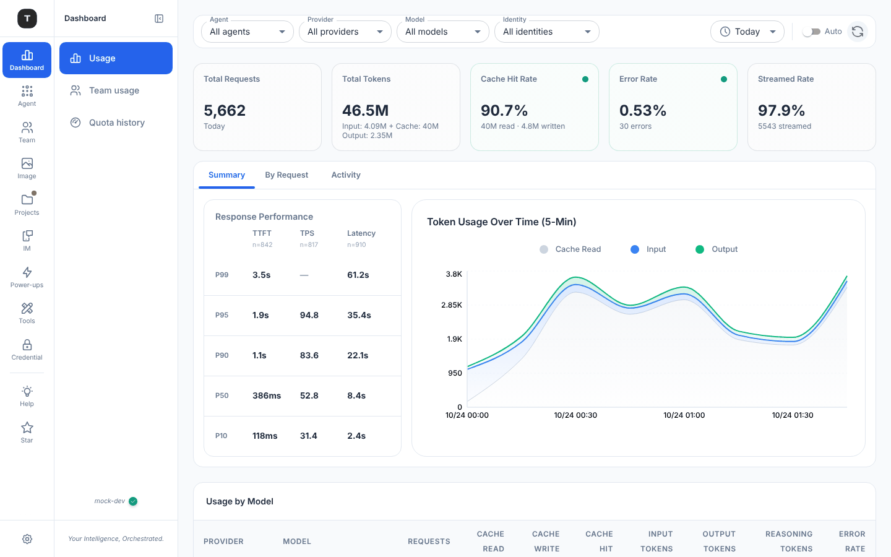
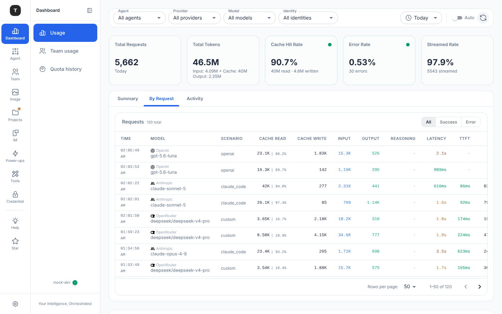
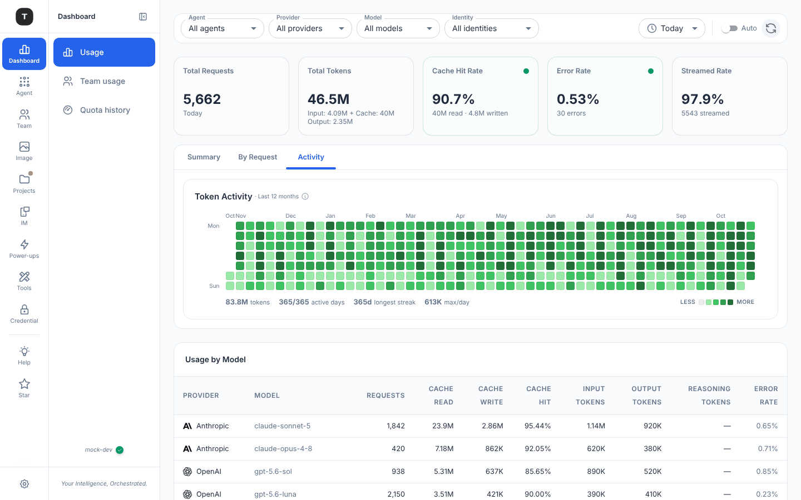

4 · Dashboard 现状：Usage 的三个 Tab
工具栏已经很干净（#2030）。乱在 Tab 面板内外的边界：哪些东西随 Tab 变、哪些控件对当前 Tab 起作用，看不出来。

D8
D5
D10
Summary

D11
D12
D13
By Request

D9
D14
Activity
D8
Usage by Model 在面板外，三个 Tab 下都在
P1
待定
它看起来像 Summary 的一部分；切到 By Request 时页面有两张表。
D5
Response Performance 行距
旧编号仍在
ux-review 的 D5，仍在。
D10
表头大写折两行；模型名比 Provider 淡
P9
待定
"CACHE / READ" 折行；这张表的主角是模型，却是灰色。
D11
Scenario 列是内部 key
P3 · P5
待定
筛选器叫 Agent、显示 "Claude Code"，表里叫 Scenario、显示 claude_code / custom。
D12
表比面板宽
P9
待定
TTFT 之后的列被截，时间折成两行；1440 宽下要横向滚动。
D13
数字按列上色
P9
待定
输入蓝、输出绿、延迟红黄绿。颜色本该只说"出错 / 慢"。
D9
控件对这个 Tab 不起作用
P4 · P12
待定
Activity 固定看 12 个月，但时间段下拉仍显示 Today；By Request 只在 Today / Yesterday 出现，换成 7 days 时 Tab 消失。
D14
月份标签重叠
P9
待定
"OctNov" 挤在一起。